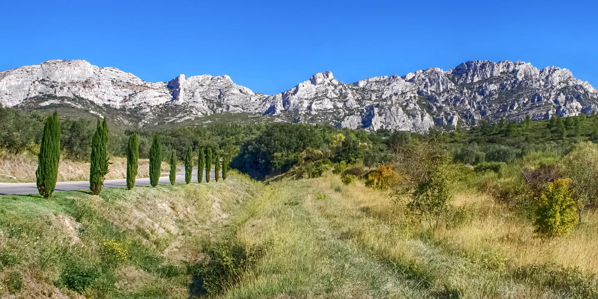
Nature
Randonnées des Alpilles
Itinéraires, niveaux et conseils pour marcher dans le massif.
Voir les randonnéesSéjour en Provence
Votre appartement au cœur des Alpilles
Cette page rassemble les informations utiles pour votre arrivée, votre séjour et vos découvertes autour d'Eygalières.
Un appartement lumineux et confortable, pensé comme un pied-à-terre simple et élégant pour profiter d'Eygalières et des Alpilles.


Ces photos vous aideront à repérer l'entrée et le cheminement jusqu'à l'appartement.
Quelques idées pour profiter pleinement du séjour : villages, patrimoine, balades, marchés et expériences typiques des Alpilles.

Itinéraires, niveaux et conseils pour marcher dans le massif.
Voir les randonnées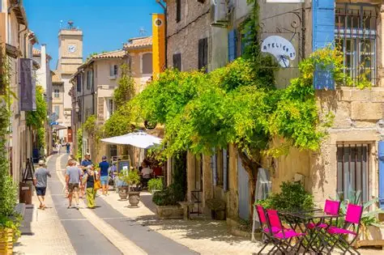
Vieux village, ruelles, points de vue, Saint-Rémy, Les Baux et Maussane.
Découvrir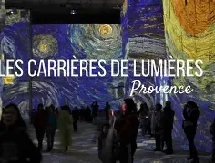
Un lieu spectaculaire aux Baux-de-Provence pour une sortie culturelle marquante.
Voir le site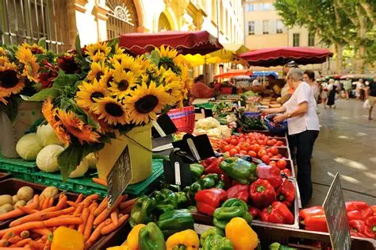
Profitez des marchés provençaux, huiles d'olive, vins, fruits et produits du terroir.
Office de tourisme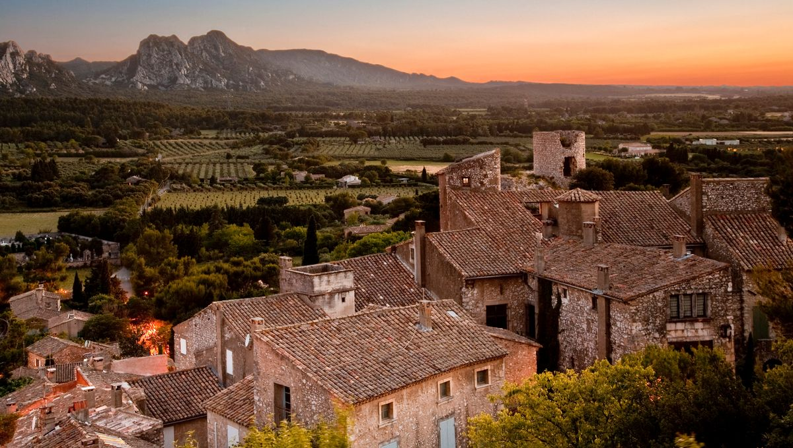
Montez dans le vieux village pour profiter des vues sur les Alpilles en fin de journée.
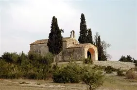
Un emblème d'Eygalières, parfait pour une balade courte et de belles photos.
Voici quelques adresses recommandées à Eygalières et dans les Alpilles. Pensez à réserver, notamment en saison.
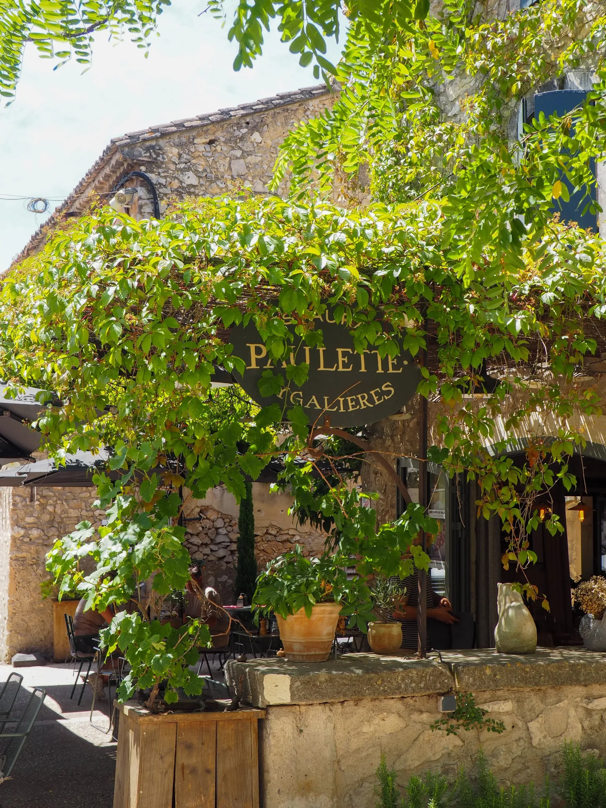
Une adresse conviviale de cuisine traditionnelle, idéale pour un repas simple, authentique et chaleureux dans le village.
Rechercher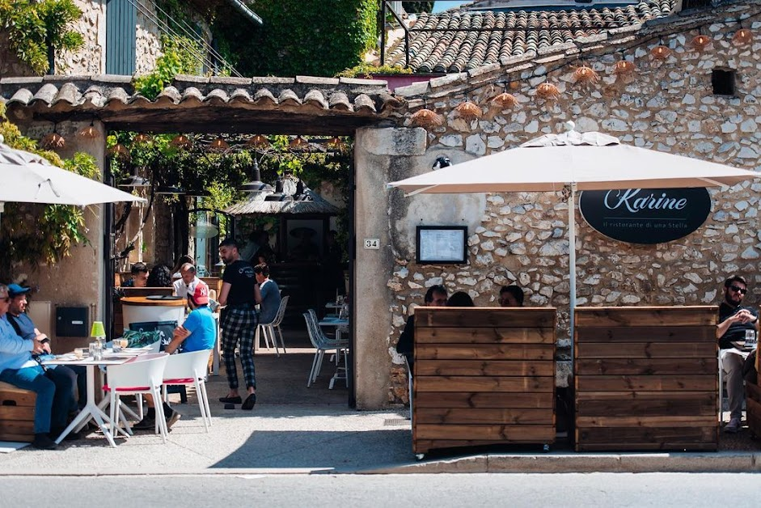
Restaurant italien apprécié à Eygalières, parfait pour une cuisine généreuse et ensoleillée. Également pratique pour les pizzas.
Voir le site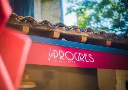
Une belle adresse au cœur du village pour profiter de l'ambiance d'Eygalières.
Voir Instagram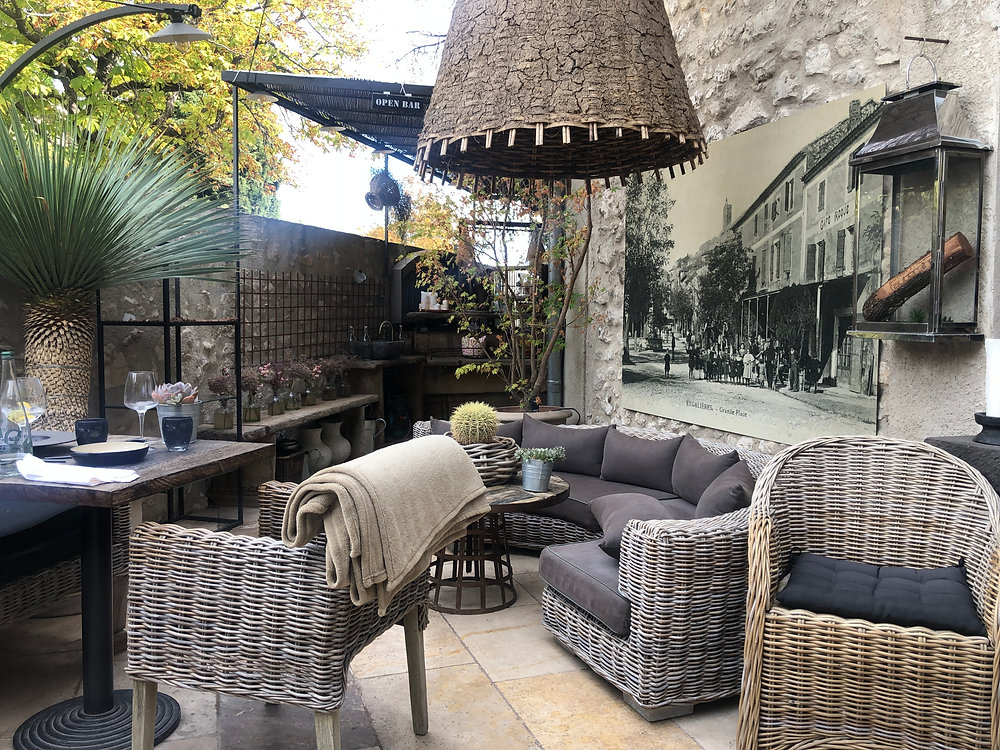
Une belle option pour un déjeuner ou un dîner dans le village, dans une atmosphère agréable.
Rechercher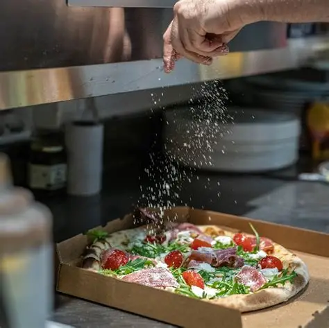
Une solution pratique pour commander des pizzas à emporter à Eygalières.
Voir le site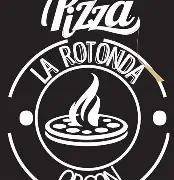
Pizzeria située à Orgon, avec possibilité de livraison selon disponibilités.
RechercherPour un moment gastronomique, les Alpilles offrent plusieurs maisons remarquables autour des Baux-de-Provence.
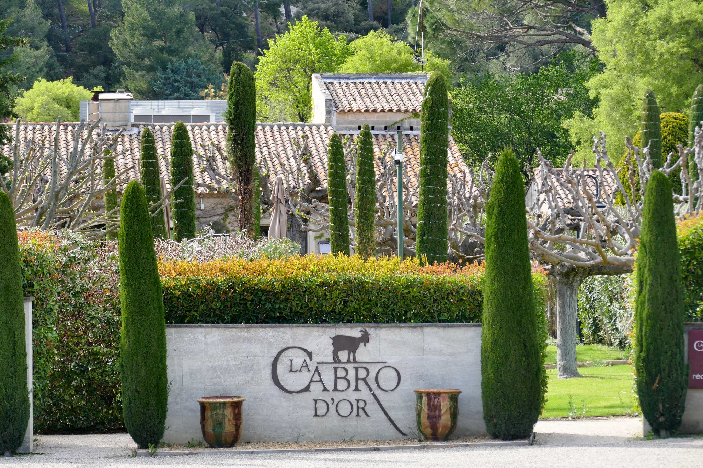
Restaurant du domaine Baumanière, dans un cadre merveilleux. Une cuisine provençale raffinée et somptueuse, qui mérite largement le détour.
Voir le site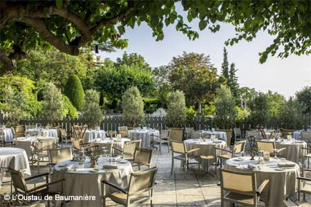
Table d'excellence du chef Glenn Viel, au sein du domaine Baumanière. Une expérience gastronomique d'exception dans un lieu emblématique.
Voir le site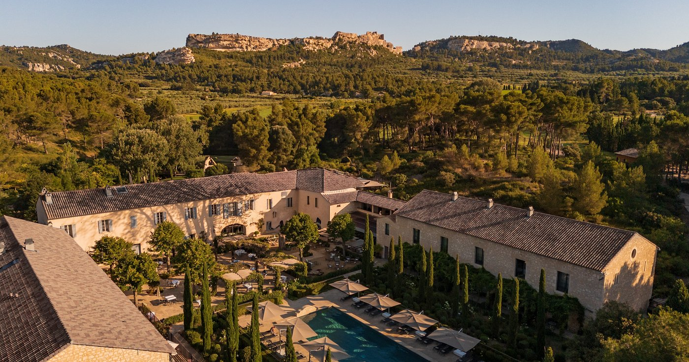
Restaurant gastronomique étoilé du Domaine de Manville. Une cuisine élégante, inspirée par les Alpilles et les produits du terroir.
Voir le site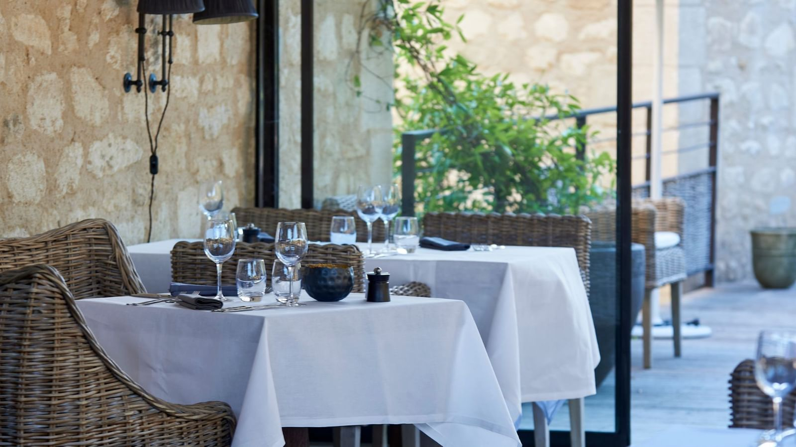
Une alternative plus décontractée, tout en restant très qualitative, pour profiter du cadre du Domaine de Manville.
Voir le site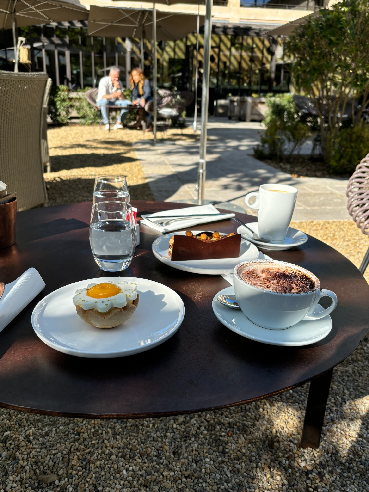
Possibilité d'y aller simplement pour prendre un verre, profiter de la magnifique cour intérieure ou goûter les pâtisseries du chef pâtissier.
Voir le bar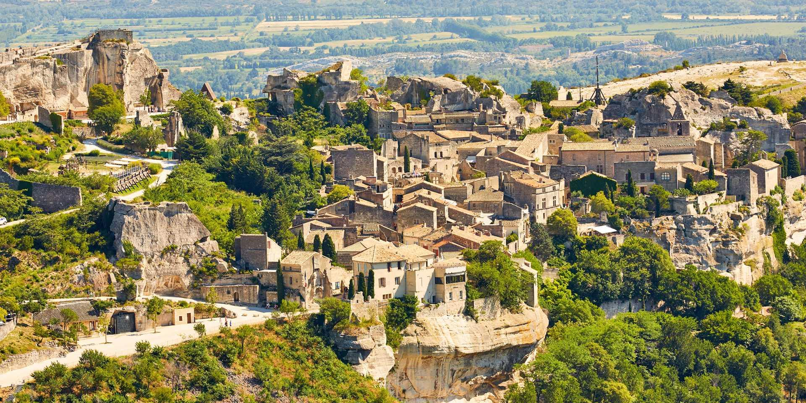
Une belle idée de sortie : village des Baux, Carrières de Lumières, puis verre ou dîner dans un domaine.
DécouvrirScannez ce QR code pour retrouver facilement cette page pendant votre séjour : accès, itinéraire, consignes, téléphone, randonnées, restaurants et office de tourisme.